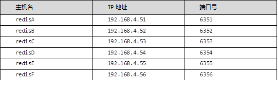

搭建redis集群，拓扑规划如图-1所示：
图－1
IP，端口规划如表-1所示：
表-1
实现此案例需要按照如下步骤进行。
步骤一：准备集群环境
1）按照表-1配置主机名，ip地址，配置yum源（系统源）这里不再操作
2）把redis的软件包传到6台数据库服务器上面，安装redis服务器，六台服务器同样操作（以51为例）
- [root@redisA ~]# yum -y install gcc gcc-c++ make
- [root@redisA ~]# cd redis
- redis/ redis-cluster/
- [root@redisA ~]# cd redis/
- [root@redisA redis]# ls
- lnmp redis-4.0.8.tar.gz
- [root@redisA redis]# tar -xf redis-4.0.8.tar.gz
- [root@redisA redis]# cd redis-4.0.8/
- [root@redisA redis-4.0.8]# make && make install
- [root@redisA redis-4.0.8]# ./utils/install_server.sh
- Welcome to the redis service installer
- This script will help you easily set up a running redis server
- Please select the redis port for this instance: [6379]
- Selecting default: 6379
- Please select the redis config file name [/etc/redis/6379.conf]
- Selected default - /etc/redis/6379.conf
- Please select the redis log file name [/var/log/redis_6379.log]
- Selected default - /var/log/redis_6379.log
- Please select the data directory for this instance [/var/lib/redis/6379]
- Selected default - /var/lib/redis/6379
- Please select the redis executable path [/usr/local/bin/redis-server]
- Selected config:
- Port : 6379
- Config file : /etc/redis/6379.conf
- Log file : /var/log/redis_6379.log
- Data dir : /var/lib/redis/6379
- Executable : /usr/local/bin/redis-server
- Cli Executable : /usr/local/bin/redis-cli
- Is this ok? Then press ENTER to go on or Ctrl-C to abort.
- Copied /tmp/6379.conf => /etc/init.d/redis_6379
- Installing service...
- Successfully added to chkconfig!
- Successfully added to runlevels 345!
- Starting Redis server...
- Installation successful! //安装成功
- [root@redisA redis-4.0.8]# ss -antlp | grep 6379 //查看时有端口
- LISTEN 0 128 127.0.0.1:6379 *:* users:(("redis-server",pid=10788,fd=6))
2）修改配置文件，6台redis服务器都要修改（以51为例子）
- [root@redisA redis-4.0.8]# /etc/init.d/redis_6379 stop
- //停止已经开启的redis服务
- Stopping ...
- Waiting for Redis to shutdown ...
- Redis stopped
- [root@redisA redis-4.0.8]# vim /etc/redis/6379.conf
- ...
- bind 192.168.4.51 //修改ip
- port 6351 //不允许相同，只指定物理接口的ip
- daemonize yes //以守护进程方式运行
- pidfile /var/run/redis_6351.pid
- cluster-enabled yes //是否启用集群，前提是以守护进程方式运行
- cluster-config-file nodes-6351.conf
- //存储集群信息的配置文件，自动生成，不允许相同
- cluster-node-timeout 5000 //集群节点通信超时时间
- ...
- [root@redisA redis-4.0.8]# /etc/init.d/redis_6379 start //启动服务
- Starting Redis server...
- [root@redisA redis-4.0.8]# ss -antlp | grep 6351 //查看有端口
- LISTEN 0 128 192.168.4.51:6351 *:* users:(("redis-server",pid=11092,fd=6))
- LISTEN 0 128 192.168.4.51:16351 *:* users:(("redis-server",pid=11092,fd=8)) //16051：集群中的主机通信时用的端口
- [root@redisA redis-4.0.8]# ps -C redis
- PID TTY TIME CMD
注意：其他几台主机在修改时请注意ip，端口等的修改，不要和51主机的一样
3）关闭防火墙51-56主机（以51为例子）
- [root@redisA redis-4.0.8]# getenforce
- Permissive
- [root@redisA redis-4.0.8]# systemctl disable firewalld
- //关闭防火墙不自启
4）查看集群信息
- [root@redisA redis-4.0.8]# redis-cli -h 192.168.4.51 -p 6351
- 192.168.4.51:6351> ping
- PONG
- 192.168.4.51:6351> cluster info
- cluster_state:fail
- cluster_slots_assigned:0
- cluster_slots_ok:0
- cluster_slots_pfail:0
- cluster_slots_fail:0
- cluster_known_nodes:1
- cluster_size:0
- ...
- 192.168.4.51:6351> cluster nodes
- f81f997d5ed988ec1587558e78d5f7dbc96abcbf :6351@16351 myself,master - 0 0 0 connected
步骤二：创建集群（在任意一台上执行创建集群的脚本都可以）这里在51上面执行
1）部署ruby脚本运行环境（在51上面执行）
- [root@redisA redis-4.0.8]# cd /root/redis-cluster/
- [root@redisA redis-cluster]# ls
- redis-3.2.1.gem ruby-devel-2.0.0.648-30.el7.x86_64.rpm
- [root@redisA redis-cluster]# yum -y install ruby rubygems
- [root@redisA redis-cluster]# rpm -ivh –nodeps \
- ruby-devel-2.0.0.648-30.el7.x86_64.rpm
- warning: ruby-devel-2.0.0.648-30.el7.x86_64.rpm: Header V3 RSA/SHA256 Signature, key ID f4a80eb5: NOKEY
- Preparing... ################################# [100%]
- Updating / installing...
- 1:ruby-devel-2.0.0.648-30.el7 ################################# [100%]
- [root@redisA redis-cluster]# which gem
- /usr/bin/gem
- [root@redisA redis-cluster]# gem install redis
- Successfully installed redis-3.2.1
- Parsing documentation for redis-3.2.1
- Installing ri documentation for redis-3.2.1
- 1 gem installed
2）生成创建集群的脚本
- [root@redisA redis-cluster]# cd /root/redis/redis-4.0.8/src/
- [root@redisA src]# cp redis-trib.rb /usr/local/bin/
- [root@redisA src]# ll /usr/local/bin/redis-trib.rb
- -rwxr-xr-x. 1 root root 65991 Sep 27 16:12 /usr/local/bin/redis-trib.rb
3）创建集群
- [root@redisA src]# redis-trib.rb create --replicas 1 \
- 192.168.4.51:6351 192.168.4.52:6352 \
- 192.168.4.53:6353 192.168.4.54:6354 \
- 192.168.4.55:6355 192.168.4.56:6356
- //--replicas 1 给每一个主配置一个从库
- [root@redisA log]# redis-trib.rb create --replicas 1 192.168.4.51:6351 192.168.4.52:6352 192.168.4.53:6353 192.168.4.54:6354 192.168.4.55:6355 192.168.4.56:6356
- >>> Creating cluster
- >>> Performing hash slots allocation on 6 nodes...
- Using 3 masters:
- 192.168.4.51:6351
- 192.168.4.52:6352
- 192.168.4.53:6353
- Adding replica 192.168.4.55:6355 to 192.168.4.51:6351
- Adding replica 192.168.4.56:6356 to 192.168.4.52:6352
- Adding replica 192.168.4.54:6354 to 192.168.4.53:6353
- ...
- ...
- ...
- [OK] All nodes agree about slots configuration.
- >>> Check for open slots...
- >>> Check slots coverage...
- [OK] All 16384 slots covered.
4）查看集群信息，任意一台主机访问本机的redis服务查看即可
cluster info 查看集群信息
cluster nodes 查看集群节点信息
- [root@redisA log]# redis-cli -h 192.168.4.52 -p 6352
- 192.168.4.52:6352> CLUSTER INFO
- cluster_state:ok //状态
- cluster_slots_assigned:16384
- cluster_slots_ok:16384
- cluster_slots_pfail:0
- cluster_slots_fail:0
- cluster_known_nodes:6
- cluster_size:3
- cluster_current_epoch:6
- cluster_my_epoch:2
- cluster_stats_messages_ping_sent:367
- cluster_stats_messages_pong_sent:327
- cluster_stats_messages_meet_sent:5
- cluster_stats_messages_sent:699
- cluster_stats_messages_ping_received:327
- cluster_stats_messages_pong_received:372
- cluster_stats_messages_received:699
- 192.168.4.52:6352> CLUSTER NODES //查看集群节点信息
- 63afbb5e7d63b1f142358634578a3488e3c9e634 192.168.4.54:6354@16354 slave bc5c4e082a5a3391b634cf433a6486c867cfc44b 0 1538039278871 4 connected
- bc5c4e082a5a3391b634cf433a6486c867cfc44b 192.168.4.53:6353@16353 master - 0 1538039278571 3 connected 10923-16383
- 28e06c5f24a2b6c6412f81369e09bc9653cc51ff 192.168.4.56:6356@16356 slave 8568fbd73cb296cad6915d524e34761b2114af47 0 1538039278069 6 connected
- 7e8d9121f44d8331ff55b45c218b87df9bda1b70 192.168.4.55:6355@16355 slave a3083123bc5c87a76aab2655171634d4ee84f418 0 1538039278000 5 connected
- 8568fbd73cb296cad6915d524e34761b2114af47 192.168.4.52:6352@16352 myself,master - 0 1538039277000 2 connected 5461-10922
- a3083123bc5c87a76aab2655171634d4ee84f418 192.168.4.51:6351@16351 master - 0 1538039277869 1 connected 0-5460
- 192.168.4.52:6352>
5）测试集群
命令：
redis-cli -c -h ip地址 -p 端口
- [root@redisA log]# redis-cli -c -h 192.168.4.51 -p 6351
- 192.168.4.51:6351> set name jim
- -> Redirected to slot [5798] located at 192.168.4.52:6352
- OK
- 192.168.4.52:6352> get name
- "jim"
- 192.168.4.52:6352> set class linux
- OK
- 192.168.4.52:6352> get class
- "linux"
- 192.168.4.52:6352> set pay 26800
- -> Redirected to slot [4013] located at 192.168.4.51:6351
- OK
- 192.168.4.51:6351> get pay
- "26800"
集群不能用的情况：
有半数或者半数以上的主库机器挂掉，集群就不能用了
把一个从库升级成主，没有从库，集群不能用（前提是：有半数或者半数以上的主库机器挂掉）
一个主库挂掉，它的从库自动顶替为主库，正常使用（前提是：有半数或者半数以上的主库机器能用），挂掉的主库修复好后，会成为从库，不会抢占为主
6）集群节点选举策略（三主，三从）
停止某个主库的redis服务，对应的从库会自动升级为主库
先查看节点信息的主从情况
- [root@redisA log]# redis-cli -c -h 192.168.4.51 -p 6351
- 192.168.4.51:6351> CLUSTER nodes
- ...
- 8568fbd73cb296cad6915d524e34761b2114af47 192.168.4.52:6352@16352 master - 0 1538040400840 2 connected 5461-10922
- 28e06c5f24a2b6c6412f81369e09bc9653cc51ff 192.168.4.56:6356@16356 slave 8568fbd73cb296cad6915d524e34761b2114af47 0 1538040400000 6 connected
- ...
- 192.168.4.51:6351>
看谁是谁的从库，如：
看节点前后的编号id是否有相同的
如：8568fbd73cb296cad6915d524e34761b2114af47
发现52的从库为56
停止主库52
- [root@redisA log]# redis-cli -h 192.168.4.52 -p 6352 shutdown
- [root@redisA log]# redis-cli -c -h 192.168.4.51 -p 6351
- 192.168.4.51:6351> CLUSTER NODES
- ...
- 8568fbd73cb296cad6915d524e34761b2114af47 192.168.4.52:6352@16352 master,fail - 1538041052349 1538041051000 2 disconnected //52的主库坏掉
- 28e06c5f24a2b6c6412f81369e09bc9653cc51ff 192.168.4.56:6356@16356 master - 0 1538041066000 7 connected 5461-10922 //56成为主库
- ...
开启52，发现52成为从库
- [root@redisB redis-4.0.8]# /etc/init.d/redis_6352 start
- Starting Redis server...
- [root@redisA log]# redis-cli -c -h 192.168.4.51 -p 6351
- 192.168.4.51:6351> CLUSTER NODES
- 8568fbd73cb296cad6915d524e34761b2114af47 192.168.4.52:6352@16352 slave 28e06c5f24a2b6c6412f81369e09bc9653cc51ff 0 1538041254000 7 connected
实现此案例需要按照如下步骤进行。
步骤一：添加主机
1）部署一台新redis服务器，ip为192.168.4.58，装包，初始化，启用集群配置，重启服务（这里之前已经操作过，不会的可以参考案例1）
2） 添加集群4.58（添加master节点）
格式：redis-trib.rb 选项 参数
选项： add-nade 添加主机（不指定角色为主）
由于之前是在51上面创建ruby脚本，所以只有51上面有redis-trib.rb命令，在51上面执行
- [root@redisA ~]# redis-trib.rb add-node 192.168.4.58:6358 192.168.4.51:6351
- >>> Adding node 192.168.4.58:6358 to cluster 192.168.4.51:6351
- >>> Performing Cluster Check (using node 192.168.4.51:6351)
- S: a3083123bc5c87a76aab2655171634d4ee84f418 192.168.4.51:6351
- slots: (0 slots) slave
- replicates 7e8d9121f44d8331ff55b45c218b87df9bda1b70
- M: 7e8d9121f44d8331ff55b45c218b87df9bda1b70 192.168.4.55:6355
- slots:0-5460 (5461 slots) master
- 1 additional replica(s)
- S: 8568fbd73cb296cad6915d524e34761b2114af47 192.168.4.52:6352
- slots: (0 slots) slave
- replicates 28e06c5f24a2b6c6412f81369e09bc9653cc51ff
- M: bc5c4e082a5a3391b634cf433a6486c867cfc44b 192.168.4.53:6353
- slots:10923-16383 (5461 slots) master
- 1 additional replica(s)
- S: 63afbb5e7d63b1f142358634578a3488e3c9e634 192.168.4.54:6354
- slots: (0 slots) slave
- replicates bc5c4e082a5a3391b634cf433a6486c867cfc44b
- M: 28e06c5f24a2b6c6412f81369e09bc9653cc51ff 192.168.4.56:6356
- slots:5461-10922 (5462 slots) master
- 1 additional replica(s)
- [OK] All nodes agree about slots configuration.
- >>> Check for open slots...
- >>> Check slots coverage...
- [OK] All 16384 slots covered.
- >>> Send CLUSTER MEET to node 192.168.4.58:6358 to make it join the cluster.
- [OK] New node added correctly.
3）检查集群主机的状态信息
选项：check 检查权限
- [root@redisA ~]# redis-trib.rb check 192.168.4.58:6358 //查看状态
- >>> Performing Cluster Check (using node 192.168.4.58:6358)
- M: c5e0da48f335c46a2ec199faa99b830f537dd8a0 192.168.4.58:6358
- slots: (0 slots) master //发现没有hash槽
- 0 additional replica(s)
- M: 7e8d9121f44d8331ff55b45c218b87df9bda1b70 192.168.4.55:6355
- slots:0-5460 (5461 slots) master
- 1 additional replica(s)
- ...
- S: a3083123bc5c87a76aab2655171634d4ee84f418 192.168.4.51:6351
- slots: (0 slots) slave
- replicates 7e8d9121f44d8331ff55b45c218b87df9bda1b70
- [OK] All nodes agree about slots configuration.
- >>> Check for open slots...
- >>> Check slots coverage...
- [OK] All 16384 slots covered.
4）手动对集群进行分片迁移
选项：reshard 重新分配hash槽
- [root@redisA ~]# redis-trib.rb reshard 192.168.4.58:6358
- How many slots do you want to move (from 1 to 16384)?4096
- //拿出多少个hash 槽给主机192.168.4.58
- What is the receiving node ID? c5e0da48f335c46a2ec199faa99b830f537dd8a0
- //主机192.168.4.58的id值
- Source node #1:all //从当前所有的主里面获取hash槽
- Do you want to proceed with the proposed reshard plan (yes/no)?yes
- ...
- Moving slot 12283 from 192.168.4.53:6353 to 192.168.4.58:6358:
- Moving slot 12284 from 192.168.4.53:6353 to 192.168.4.58:6358:
- Moving slot 12285 from 192.168.4.53:6353 to 192.168.4.58:6358:
- Moving slot 12286 from 192.168.4.53:6353 to 192.168.4.58:6358:
- Moving slot 12287 from 192.168.4.53:6353 to 192.168.4.58:6358:
再次查看发现4.58有4096个hash slot
- [root@redisA ~]# redis-trib.rb check 192.168.4.58:6358
- >>> Performing Cluster Check (using node 192.168.4.58:6358)
- M: c5e0da48f335c46a2ec199faa99b830f537dd8a0 192.168.4.58:6358
- slots:0-1364,5461-6826,10923-12287 (4096 slots) master
- 0 additional replica(s)
5）删除master角色的主机
先删除主机占用的hash槽
- [root@redisA ~]# redis-trib.rb reshard 192.168.4.58:6358
- How many slots do you want to move (from 1 to 16384)?4096
- //移除hash 槽的个数
- What is the receiving node ID? bc5c4e082a5a3391b634cf433a6486c867cfc44b
- //要移动给谁的id即目标主机（这里可以随机写一个master的ID）
- Source node #1: c5e0da48f335c46a2ec199faa99b830f537dd8a0
- //从谁那移动即源主机（这里写4.58的ID）
- Source node #2:done //设置完毕
- ...
- Moving slot 12282 from c5e0da48f335c46a2ec199faa99b830f537dd8a0
- Moving slot 12283 from c5e0da48f335c46a2ec199faa99b830f537dd8a0
- Moving slot 12284 from c5e0da48f335c46a2ec199faa99b830f537dd8a0
- Moving slot 12285 from c5e0da48f335c46a2ec199faa99b830f537dd8a0
- Moving slot 12286 from c5e0da48f335c46a2ec199faa99b830f537dd8a0
- Moving slot 12287 from c5e0da48f335c46a2ec199faa99b830f537dd8a0
- Do you want to proceed with the proposed reshard plan (yes/no)?yes //提交
- ...
- Moving slot 12282 from 192.168.4.58:6358 to 192.168.4.53:6353:
- Moving slot 12283 from 192.168.4.58:6358 to 192.168.4.53:6353:
- Moving slot 12284 from 192.168.4.58:6358 to 192.168.4.53:6353:
- Moving slot 12285 from 192.168.4.58:6358 to 192.168.4.53:6353:
- Moving slot 12286 from 192.168.4.58:6358 to 192.168.4.53:6353:
- Moving slot 12287 from 192.168.4.58:6358 to 192.168.4.53:6353:
删除集群主机4.58(删除之后redis服务自动关闭)
- [root@redisA ~]# redis-trib.rb del-node 192.168.4.58:6358 \
- c5e0da48f335c46a2ec199faa99b830f537dd8a0 //删除谁+删除的id
- >>> Removing node c5e0da48f335c46a2ec199faa99b830f537dd8a0 from cluster 192.168.4.58:6358
- >>> Sending CLUSTER FORGET messages to the cluster...
- >>> SHUTDOWN the node.
6）添加从节点主机，随机添加
- [root@redisA ~]# redis-trib.rb add-node --slave \
- 192.168.4.57:6357 192.168.4.51:6351
- >>> Adding node 192.168.4.57:6357 to cluster 192.168.4.51:6351
- >>> Performing Cluster Check (using node 192.168.4.51:6351)
- ……
- ……
- [OK] All 16384 slots covered.
- Automatically selected master 192.168.4.51:6351
- >>> Send CLUSTER MEET to node 192.168.4.57:6357 to make it join the cluster.
- Waiting for the cluster to join.
- >>> Configure node as replica of 192.168.4.51:6351.
- [OK] New node added correctly.
7）移除从节点，从节点主机没有槽位范围，直接移除即可
命令格式：
redis-trib.rb del-node 192.168.4.57:6357 主机id值
- [root@redisA ~]# redis-trib.rb del-node 192.168.4.57:6357 \
- f6649ea99b2f01faca26217691222c17a3854381
- >>> Removing node f6649ea99b2f01faca26217691222c17a3854381
- from cluster 192.168.4.57:6351
- >>> Sending CLUSTER FORGET messages to the cluster...
- >>> SHUTDOWN the node.